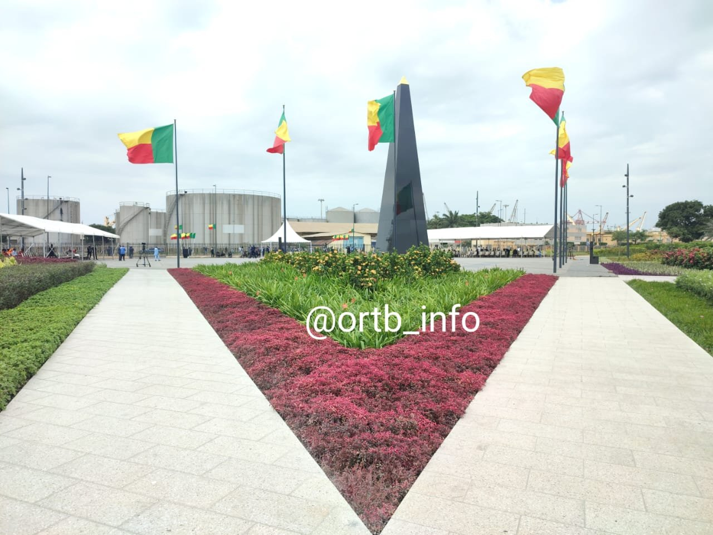

Le conseil communal de Kata, dès son installation a fait réaliser le lotissement de l’un de ses villages DUNIA.
Pour la construction des infrastructures d’utilité publique (route, école, marché, terrain de sport, centre de santé, jardins publics, espaces verts.), il a été prélevé 40% de la superficie initiale de chaque parcelle des propriétaires terriens.
Le conseil communal a fait aménager un jardin public de forme circulaire de 120m de diamètre.
Au centre de ce jardin, un obélisque a été érigé. Bio possédait un terrain rectangulaire de 20m sur 30m. A l’issue des travaux de recasement, il lui a été attribué un terrain carré.
Baké, l’une des filles de Bio, se préoccupe de connaître les dimensions de la parcelle attribuée à son père. Par ailleurs, impressionnée par la beauté du nouvel environnement créé au niveau du jardin public, elle se demande quelle peut bien être la hauteur de l’obélisque.